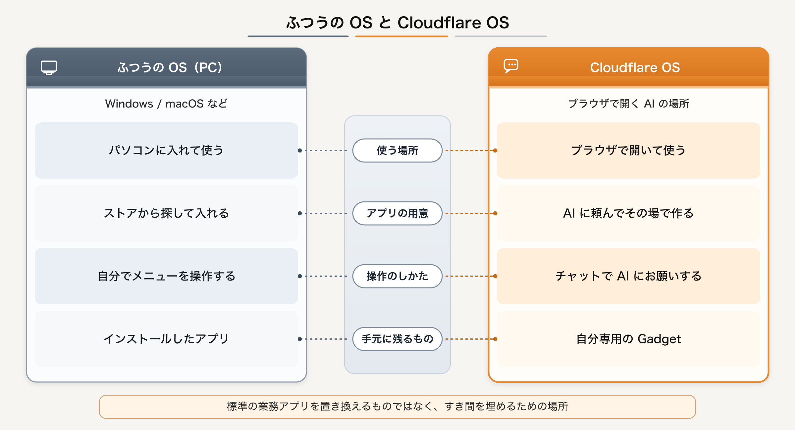
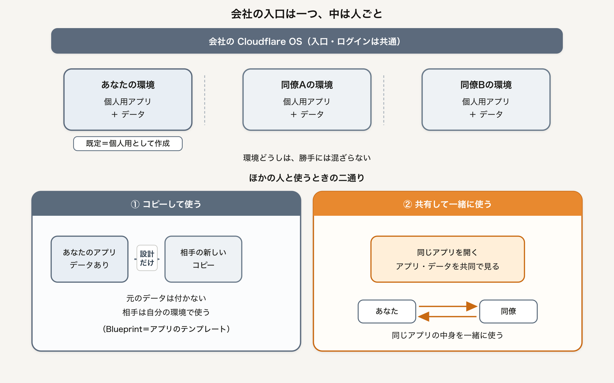

Cloudflare OS 入門
社内AIエージェントとGadgetsを安全に動かす
頼むだけで、仕事の道具が手元に残る。
表紙 · 確定
社内AIエージェントとGadgetsを安全に動かす
頼むだけで、仕事の道具が手元に残る。
目次 · 確定（ページ番号は仮）
はじめに · 1/2
こんにちは。僕は 30 代の IT 企業に勤める会社員です。日々の業務では、組織の標準アプリを使いつつ、自分の担当だけに残る「ちょっとした不便」にも頭を悩ませていました。
売上管理や勤怠のような大きい仕組みは、会社が用意した公式ツールで足ります。困るのは、その外側です。自分だけが持っている提携先との手順。二人だけで回しているチェック表。部署内の小さな集計。開発チームに「標準アプリにしてほしい」と頼んでも、優先度が上がらない。かといって、自分でアプリを一から作るには工数がかかりすぎる。そんなすき間を、ずっと抱えていました。
そんなとき出会ったのが、Cloudflare OS でした。生成 AI とおしゃべりしながら、個人がちょっと欲しいアプリをその場で作り、そのまま使える「場所」です。大きい業務システムを置き換えるものではなく、人ごとに違う業務の「少しだけ改善したい」に応えてくれる OS だと、触ってみて確信しました。
実際に使い始めると、チャットに頼むだけでスライドや小さな道具が手元に残ります。コードを書かなくても形になり、足りなければ会話で足せます。同僚と一緒に触る共有も、アプリのテンプレートとして配ることもできます。公式の言葉では、それが Gadget（個人用の小さなアプリ）や Blueprint（アプリのテンプレート）と呼ばれている部分です。
はじめに · 2/2
もう一つ、僕が大きく感じたのは、社内の閉域で使える点です。自社のアカウントに載せ、入り口を絞り、外のサービスへの接続は門番（Gatekeeper）経由にできます。鍵を AI に丸ごと渡さず、紹介したリソースだけ通す。便利さと安全を、同じ土台の上で考えられます。
Cloudflare 社内では、エンジニア以外も含め多くの人が日々これを使っているそうです。オープンソースとして公開された狙いは、そのまま Cloudflare のブランドを借りるだけでなく、自社の用語や手順を載せた「Your Company OS」を持てるようにすることにあります。
この本では、僕が Cloudflare OS をどう捉え、どう触ってきたかを、画面操作中心に解説していきます。プログラミングの深い知識は前提にしません。ボタンとチャットの流れが追えれば十分です。第1章で全体像と用語、第2章で起動、第3章で画面、第4章で機能、第5章から実践を四つ通します。急ぎなら第2章のあと第5章へ進み、用語で詰まったら第1章と第4章へ戻ってください。
生成 AI に頼むだけで一瞬アプリができ、一緒に使える環境までそろう。そんな働き方の一端を、この本で体験してもらえたら嬉しいです。皆さんの「ちょっと欲しい」が、標準開発の待ち行列に並ばずに済む一助になれば幸いです。
※本書籍は 2026 年 8 月執筆時点の情報に基づいています。Cloudflare OS は Early Access のため、画面内容が変更される場合がございます。あらかじめご了承ください。本書は公式マニュアルの置き換えではなく、学習用の入門ガイドです。
第1章 · 章扉
1
用語と全体像を、かみ砕いて
第1章 · 1 ひとことで言うと
僕が Cloudflare OS をひとことで言うなら、「生成 AI とおしゃべりしながら、ちょっと欲しいアプリや資料を作って、そのまま使える場所」です。Windows や macOS のように PC に入れる OS ではありません。ブラウザで開き、チャットに頼むと、スライドや小さなアプリが手元に残ります。
ふつうのチャット AI だと、いい答えも会話の流れのなかで終わりがちです。Cloudflare OS では、できたものが Gadget として残るので、翌日も同じ道具を開き直せます。標準の業務アプリを置き換える話ではなく、すき間を埋めるための場所です。

図: ふつうの OS（PC）と Cloudflare OS の違い
第1章 · 2 覚えておきたい三つ
この本の文章のなかでは、エージェント、Gadget、Gatekeeper（門番）という言葉がよく出てきます。それぞれの役割は、次の図のとおりです。細かい操作は第3章、仕組みの深い話は第4章に回します。

図: 3つの登場人物。お願いはエージェントへ、外部への接続はかならず門番ごし
第1章 · 3 会社の入口は一つ、中は人ごと
会社で Cloudflare OS を一つ用意しても、中で動くアプリの実行環境は人ごとに分かれます。Gadget は既定では個人用のアプリとして作られます。ほかの人と使いたいときは、コピーして使うか、共有して一緒に使うかの二通りです。詳細は次の図のとおりです。どちらを選ぶかは第4章でまた出てきます。

図: 入口は共通、環境は人ごと。コピーして使う／共有して一緒に使う
第1章 · 4 この本の進め方
この本は、読者自身の環境に Cloudflare OS を用意して手を動かす前提で進めます。パソコンでローカル起動する、または自分（自社）の Cloudflare アカウントに載せる、のどちらかで構いません。画面を眺めているだけでは、第5章以降の実践がしづらいです。
章の順番は、だいたい次のとおりです。急ぎの人は第2章のあと第5章へ進み、用語で詰まったら第1章と第4章に戻ってください。
操作のイメージだけ先に置いておくと楽です。頼む → 形になる → 見て直す → 渡す（コピーして使う／共有して一緒に使う）。次の章から、実際に入口を開きます。
第1章 · 5 キーワード早見
この本でよく出る言葉です。厳密な定義より、「たとえ」で覚えてください。あとから見返す用の早見表です。
| ことば | たとえ |
|---|---|
| エージェント | 自然言語で話しかけ、コードを書いてもらう相手 |
| Gadget | 自分専用の小さなアプリ |
| Blueprint | アプリのテンプレート（データは付かない） |
| Gatekeeper | 外のサービスへの門番 |
| ワークスペース | いま作業する場所（会話とアプリがそろう） |
| Your Company OS | 自社の言葉やつなぎ先を載せた、自社向けの場所 |
第1章 · まとめ
ポイント
ここまで Cloudflare OS の概要を説明してきましたが、文章だけだとパッとイメージしにくいかもしれません。まずは環境を用意して動かしてみると、すぐに掴めてきます。手を動かしながら、理解を深めていきましょう。
第2章 · 章扉 · 確定
2
最短の起動とデプロイ
第2章 · 本文 · 作成中
入り方は主に次の三つです。
pnpm run-local → http://localhost:8787（本文作成中 — 非エンジニア向けの選び方と、必要なもの一覧をここに書きます。）
注意
Cloudflare OS は Early Access です。画面や手順は更新で変わることがあります。
第2章 · 手順枠 · 見出し確定 · 手順文作成中
必要な道具を入れる
（作成中）pnpm の入れ方を、画面・公式リンク中心で案内します。
図: 準備完了の確認
起動コマンドを実行する
pnpm run-local を実行します。初回は時間がかかることがあります。
図: 起動コマンドの実行
ブラウザで開く
http://localhost:8787 にアクセスし、画面が出ることを確認します。
図: ローカルで開いたホーム
第2章 · 本文 · 作成中
自分の Cloudflare アカウントに載せる場合は、ホスト型の案内（https://os.cloudflare.app/deploy）を使えます。
（本文作成中 — クリック中心の流れと、starter で本格運用する道があることだけ触れます。）
第2章 · まとめ枠 · 確定
第3章 · 章扉 · 確定
3
ホーム・ワークスペース・チャット・管理
第3章 · 本文 · 作成中
ホームでは、仕事の机にあたるワークスペースを一覧します。新しく開く・続きを開く、がここから始まります。
（本文作成中 — 画面の見どころと、新規作成の操作をここに書きます。）
図: ホーム — ワークスペースが一覧される
第3章 · 図枠 · キャプション確定
図: 左に会話、右にできた道具
図: 管理者向けの整えどころ（名前・ロゴなど）
第3章 · 本文 · 作成中
よく使う入り口は次のとおりです。
（本文作成中 — 各画面の短い歩き方をここに書きます。迷ったらホームに戻る、で十分です。）
第3章 · まとめ枠 · 確定
第4章 · 章扉 · 確定
4
エージェント・道具・型紙・門番と安全
第4章 · 本文 · 作成中
エージェントは、自然言語で話しかける相手です。コードはエージェントが書いてくれます。成果は Gadget として手元に残ります。
（本文作成中 — 提案を見てから確定する感覚、勝手に外へ書き込ませない、という話をここに書きます。）
ポイント
エージェントは「全部自動で外に書く」のではなく、門番（Gatekeeper）とあなたの確認を挟める設計です。
第4章 · 2 Gadget と Blueprint
Gadget — 自分専用の小さな道具。改変しても、他人のコピーには影響しません。
Blueprint — 型紙。データやパスワードは入りません。配ると相手が自分用のコピーを作れます。
（本文作成中 — たとえ話と画面での見分け方をここに足します。）
第4章 · 3 共有の二通り
（本文作成中 — どちらを選ぶかの目安をここに書きます。）
第4章 · 囲み · 骨子確定
最初、エージェントも Gadget も何にもつながっていません。つなぐときはリソースを「紹介」します。鍵は門番が持ち、エージェントは直接持ちません。
用語
Gatekeeper＝門番。外のサービス（GitHub など）への出入りを見張り、ログを残し、必要なら承認を待ちます。
注意
読んだデータを共有するとき、見てはいけない人に漏れないよう権限が追いかけます。
ポイント
承認は「その場で止めて待つ」だけではありません。あとでまとめて見てよい、という進め方ができます。
（本文作成中 — 上記を物語調に少し厚くします。）
第4章 · まとめ枠 · 確定
第5章 · 章扉 · 確定
5
プロンプトで資料を作り、編集・共有まで
第5章 · 本文 · 作成中
この章のゴールは、スライド形式の Gadget を手元に残すことです。必要なら追プロンプトで直し、共有の入り口まで触れます。
プロンプト例
「来週の顧客ミーティング用に、課題・提案・次のステップの3部構成でスライドを作って。」
（本文作成中 — 準備と成功の目安をここに書きます。）
第5章 · 手順枠 · 見出し確定
ワークスペースを開く
（作成中）新規または既存の作業机を選びます。
図: 作業机を開く
プロンプトを送る
（作成中）例文を貼り、枚数やトーンを足します。
図: 頼む
できたスライドを見て直す
（作成中）「○枚目の見出しを短く」など追プロンプトで直します。
図: 形になった成果
第5章 · 本文 · 作成中
一緒に直したい相手にはコラボ共有、型だけ渡すなら Blueprint です。
（本文作成中 — どちらか一方の操作手順をここに書きます。）
第5章 · まとめ枠 · 確定
第6章 · 章扉 · 確定
6
欲しいツールを自分用に生成する
第6章 · 本文 · 作成中
この章では、ゼロから小さなアプリ（Gadget）を作ります。題材例はホワイトボード、進捗ボード、三目並べなどです。コードは書きません。
プロンプト例
「チームで使えるシンプルなホワイトボードアプリを作って。色ペンと付箋を置けるようにして。」
（本文作成中 — 題材の選び方をここに書きます。）
第6章 · 手順枠 · 見出し確定
欲しい画面を言葉にする
（作成中）誰が・何のために・どんな操作か。短いほど直しやすいです。
図: まず言葉にする
生成を待ち、触ってみる
（作成中）動かして足りない所を追プロンプトで足します。
図: 自分用アプリが立ち上がる
エージェントと中で協働する（任意）
（作成中）「このボードに今日のタスクを3つ追加して」など、作ったあとにも頼めます。
図: 作ったあとにも頼める
第6章 · まとめ枠 · 確定
第7章 · 章扉 · 確定
7
Gatekeeper で GitHub などと連携する
第7章 · 本文 · 作成中
この章では、GitHub などへリソースを「紹介」し、issue ダッシュボードのような道具を作ります。環境によって接続設定は異なります。概念と画面操作を優先します。
注意
会社のアカウントでつなぐ前に、利用ポリシーを確認してください。個人の練習用リポジトリから始めるのが安全です。
（本文作成中 — つながらないときの読み進め方をここに書きます。）
第7章 · 手順枠 · 見出し確定
コネクタ／Gatekeeper を用意する
（作成中）Connectors から GitHub 等を有効化します。
図: 門番を用意する
リソースを紹介する
（作成中）リポジトリのリンクを貼る／選ぶ。狭い範囲だけ許可します。
図: 必要なものだけ渡す
ダッシュボードを頼む
「このリポの issue ダッシュボードを作って」など。書き込みは承認を確認します。
図: 外のデータが見える道具
第7章 · まとめ枠 · 確定
第8章 · 章扉 · 確定
8
見た目・コンテキスト・承認・運用の第一歩
第8章 · 本文 · 作成中
この章は「Your Company OS」の入口です。サイト名・ロゴ・アクセント、エージェントへの指示、featured Blueprint、コネクタの可否など、再デプロイなしで変えられる範囲から整えます。
（本文作成中 — 管理者と一般ユーザーで見える差をここに書きます。）
第8章 · 手順枠 · 見出し確定
/admin を開く
（作成中）管理者としてブランド設定（名前・ロゴ・色）を行います。
図: 社名と色を合わせる
エージェントへの指示を書く
（作成中）社内用語・トーン・禁止事項の例を短く載せます。
図: 会社のやり方を載せる
コネクタと承認の方針を決める
（作成中）誰に何を許可するか。まずは読み取り中心から。
図: 門番のスイッチ
第8章 · 本文 · 作成中
よく使う Blueprint を Explore に載せる、ログと承認を誰が見るか決める、AI のコストを見える場所があることを知る——ここまでが第一歩です。
（本文作成中 — 次のステップ（カスタム Gatekeeper、MCP、starter）への橋渡しをここに書きます。）
第8章 · まとめ枠 · 確定
おわりに · 骨子確定 · 本文作成中
ここまでで、Cloudflare OS を開き、画面を歩き、スライドや小さなアプリを作り、外のサービスと安全につなぐ考え方と、自社向けに整える入口まで来ました。
（本文作成中 — ねぎらいの一文をここに足します。）
付録A · 用語集 · 確定
| 用語 | ひとこと |
|---|---|
| エージェント | 自然言語で話しかけ、コードを書いてもらう相手 |
| Gadget | 自分専用の小さな道具 |
| Blueprint | アプリのテンプレート（データは付かない） |
| Gatekeeper | 外のサービスへの門番 |
| ワークスペース | 作業机 |
| Cap'n Web | 画面とサーバーが話す約束（詳細は割愛） |
| AI Gateway | モデル利用の窓口・見える化 |
付録B · 操作早見
pnpm run-local → http://localhost:8787付録C · 参考リンク
奥付 · 確定（草稿）
Cloudflare OS 入門
社内AIエージェントとGadgetsを安全に動かす
2026 年第1版（草稿）
対象: 非エンジニア寄りの実践入門
検証環境: ローカル起動 / Cloudflare アカウント（任意）
Cloudflare OS は Early Access です。画面や仕様は更新により変わることがあります。本資料は非公式の学習用ガイドです。本文は作成中の箇所があります。